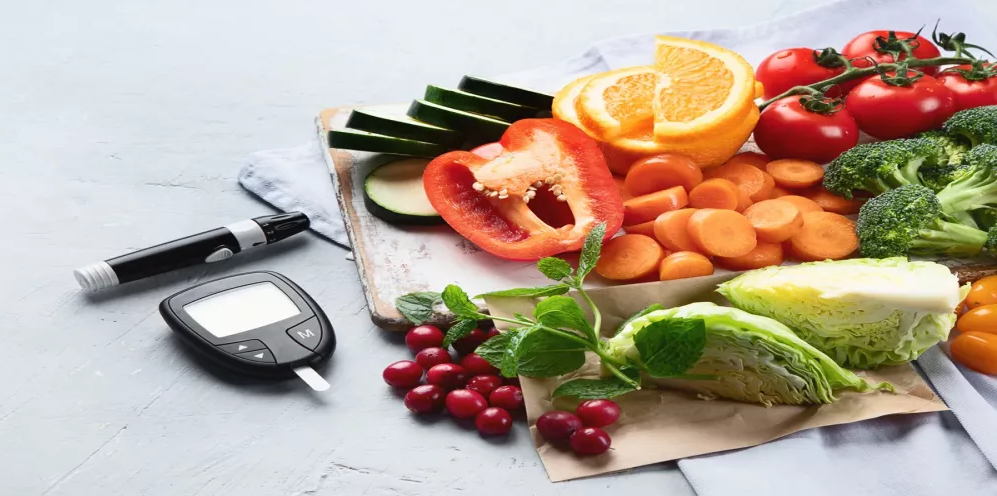

Healthy tips for diabetics

- A healthy and balanced diet is one of the factors that may contribute to increasing the ability to control diabetes in those who suffer from it, and reduces the risk of developing health complications that this disease may cause, in
addition to that it may enhance their feeling of health and vitality, We mention in the following some of the points that must be taken into consideration when writing a diet for diabetics.
- Make your calories count with nutritious foods. Choose healthy carbohydrates, fiber-rich foods, fish and "good" fats.
- During digestion, sugars and starches break down into blood glucose. Sugars also are known as simple carbohydrates, and starches also are known as complex carbohydrates. Focus on healthy carbohydrates, such as :
- Fruits.
- Vegetables.
- Whole grains.
- Legumes, such as beans and peas.
- Low-fat dairy products, such as milk and cheese.
- Dietary fiber includes all parts of plant foods that your body can't digest or absorb. Fiber moderates how your body digests food and helps control blood sugar levels. Foods high in fiber include :
- Vegetables.
- Fruits.
- Nuts.
- Legumes, such as beans and peas.
- Whole grains.
- Eat heart-healthy fish at least twice a week. Fish such as salmon, mackerel, tuna and sardines are rich in omega-3 fatty acids. These omega-3s may prevent heart disease. Avoid fried fish and fish with high levels of mercury, such as
cod.
- Foods containing monounsaturated and polyunsaturated fats can help lower your cholesterol levels. These include :
- Avocados.
- Nuts.
- Canola, olive and peanut oils.
- But don't overdo it, as all fats are high in calories.
- Diabetes raises your risk of heart disease and stroke by raising the rate at which you develop clogged and hardened arteries. Foods containing the following can work against your goal of a heart-healthy diet.
- Avoid high-fat dairy products and animal proteins such as butter, beef, hot dogs, sausage and bacon. Limit coconut and palm kernel oils.
- Avoid trans fats found in processed snacks, baked goods, shortening and stick margarines.
- Cholesterol sources include high-fat dairy products and high-fat animal proteins, egg yolks, liver, and other organ meats. Aim for no more than 200 milligrams (mg) of cholesterol a day.
- Aim for no more than 2,300 mg of sodium a day. Your health care provider may suggest you aim for a smaller amount if you have high blood pressure.
-
Diet for diabetics for a week:
- To plan his own healthy eating schedule, to avoid various health problems, a diabetic patient will be presented with a special nutritional plan consisting of 5 meals for 7 days,which is as follows :
- One slice of whole grain bread.
- Half a cup of spinach cooked with a teaspoon of olive oil.
- Beaten egg with 2 egg whites.
- A quarter cup of grated low-fat cheese.
- A cup of watermelon cubes.
- A cup of coffee with a teaspoon of cream.
- One serving of chicken salad with dressing.
- A loaf of whole grain bread.
- A tablespoon of peanut butter.
- Small apple.
- 4 ounces of grilled chicken.
- Small grilled potatoes.
- A cup of green beans and fried mushrooms.
- A small apple with a tablespoon of almond butter.
- One cup is equivalent to 100 grams of cooked oatmeal.
- ¾ cup of cranberries, or a few grams of almonds.
- One teaspoon of chia seeds.
- Two cups of fresh spinach.
- Two ounces of grilled chicken breast.
- Half a cup of chickpeas.
- Half a small avocado.
- Half a cup of chopped strawberries.
- A quarter cup of grated carrots.
- Two tablespoons of low-fat dressing.
- A small peach, cut into cubes.
- A third of a cup of cottage cheese with a fat content of 2%.
- A plate of whole grain oats.
- Half a cup of fried eggplant.
- 4 pieces of dried tomatoes.
- 5 large olives, chopped.
- Half a cucumber cut into cubes.
- A tablespoon of balsamic vinegar.
- Some fresh basil.
- One apple.
- Two teaspoons of almond butter.
- Three quarters of a cup of bran flakes.
- One piece of fruit.
- A cup of skim milk.
- Boiled egg.
- Two ounces of red meat.
- Two teaspoons of low-fat mayonnaise.
- Half a cup of chopped celery.
- a slice of bread.
- A medium-sized orange.
- Half a cup of vegetable juice.
- Two ounces of lean chicken breast.
- Half a cup of cooked pasta.
- A teaspoon of vegetable butter.
- A quarter cup of cantaloupe.
- A cup of skim milk.
- A cup of low-fat Greek yogurt.
- Half a small banana.
- A medium-sized slice of whole grain bread.
- Two teaspoons of jelly.
- Half a cup of chopped wheat grains.
- A cup of 1% low-fat milk.
- Pieces of fruit.
- 3 ounces of grilled chicken breast.
- A cup and a half of fresh cauliflower.
- A teaspoon of ready-made salad dressing.
- A cup of fresh strawberries.
- Large onion, chopped.
- Two teaspoons of curry powder.
- Two-thirds of a cup of whole wheat couscous.
- A cup and a third of water.
- Two cups of cooked chicken.
- A cup of frozen peas.
- Half a cup of low-fat mayonnaise.
- 3 tablespoons of sauce.
- A small peach.
- A third of a cup of cottage cheese with a fat content of 2%.
- Sweet potato toast sandwich.
- 3 ounces of grilled chicken breast.
- A cup and a half of fresh cauliflower.
- A teaspoon of ready-made salad dressing.
- A cup of fresh strawberries.
- A cup of low-fat Greek yogurt.
- Half a small banana.
- Two-thirds of a cup of quinoa.
- 8 ounces of tofu.
- A cup of cooked Chinese cabbage.
- A cup of steamed broccoli.
- Two teaspoons of olive oil.
- One piece of kiwi fruit.
- One cup of celery, plus a teaspoon and a half of peanut butter.
- A loaf of bread.
- A quarter cup of cheese.
- Half a large banana.
- A cup of 1% low-fat milk.
- Half a cup of canned tuna in water.
- A teaspoon of mayonnaise.
- Half a cup of mixed vegetables.
- a slice of bread.
- A medium orange.
- One apple.
- Two teaspoons of almond butter.
- Two ounces of red meat.
- Half a cup of cooked pasta.
- A teaspoon of vegetable butter.
- A quarter cup of watermelon.
- A cup of skim milk.
- One cup of cucumber plus a teaspoon of tahini.
- Two slices of roasted sweet potatoes topped with ounces of cheese, spinach, and ateaspoon of flaxseeds.
- 1/2 ounces of salad greens.
- Two tablespoons of chopped almonds.
- A quarter cup of roasted pumpkin seeds.
- Half a cup of dried berries.
- Small apple cut into cubes.
- A third of a cup of low-fat feta cheese.
- 7 ounces of roasted turkey breast.
- A third of a cup of balsamic vinegar.
- A tablespoon of olive oil.
- Two-thirds of a cup of quinoa.
- 8 ounces of tofu.
- A cup of cooked Chinese cabbage.
- A cup of steamed broccoli.
- Two teaspoons of olive oil.
- One piece of kiwi fruit.
- A cup of celery with a tablespoon of peanut butter.